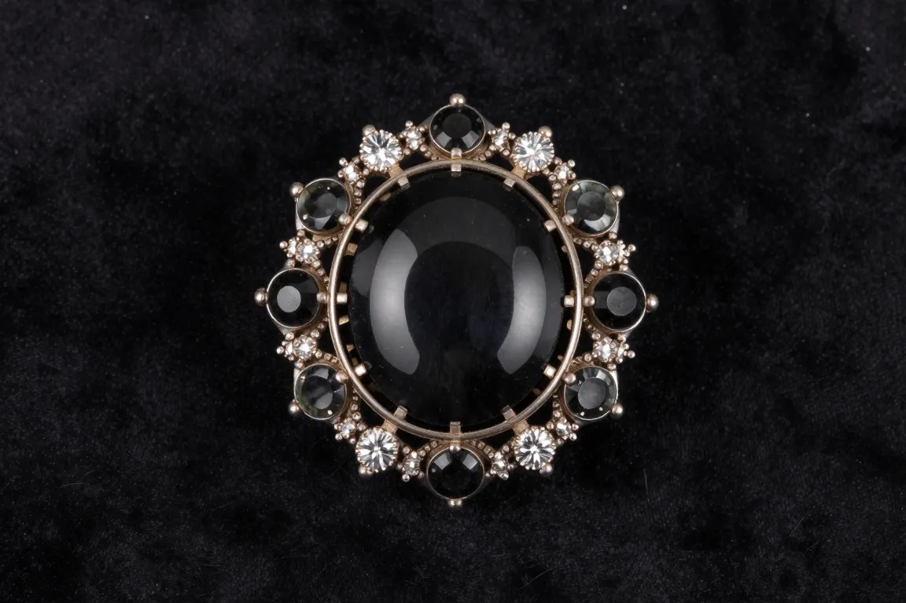

мода · 1837–1901 · также: Викторианские траурные и любовные украшения, Сентиментальные украшения викторианской эры
Украшения, хранящие человека или чувство: медальоны, волосяная работа, камеи, змеи, сердца и чёрный гагат для траура. Их делали из золота, гагата и жемчуга в Британии после 1837 года.

Главная идея
Украшение несёт память: оно держит у тела прядь волос, имя или образ.
Принципы дизайна
Давайте каждой вещи полость или стеклянную лицевую часть для пряди волос, портрета или монограммы.
Режьте гагат или раковину вручную в цветок, руку, крест или голову в рельефе.
Делайте траурные украшения из чёрного гагата на первый год и на первые два года вдовства, с жемчугом как слезами.
Придавайте вещи форму символа: сердце, змея с хвостом во рту, сомкнутые руки, якорь или незабудка.
Гравируйте дату, имя или девиз на обороте вещи.
Носите медальон на длинной цепочке или короткой бархатной ленте, в центре груди или у горла.
Сажайте в кольцо мелкие камни так, чтобы первые буквы названий камней складывались в слово, например REGARD.
Оснащайте брошь предохранительной застёжкой и шарнирной спинкой для булавки, держащей шаль или воротник.